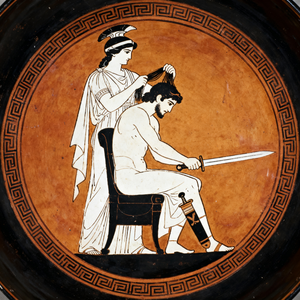
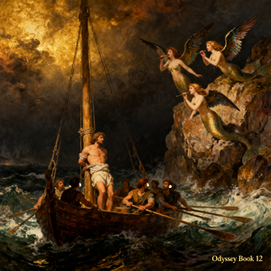

荷马在《伊利亚特》中展示了西方文学史上最具革命性的叙事策略：in medias res（从中间开始）。史诗不始于特洛伊战争的起因，不以海伦的被诱拐或希腊联军的集结为起点，而是在战争第九年，以阿喀琉斯的愤怒为整个叙事的原始推力。
这一结构选择本身就是一场叙事革命。赫西俄德式的线性时间——从宇宙起源讲起的史诗传统——被彻底抛弃。取而代之的是一个压缩时间的叙事装置：五十二天的行动浓缩了十年的战争。荷马用追叙（analepsis）和预叙（prolepsis）构建了一张时间之网，让过去和未来同时锚定于当下的愤怒之中。
阿喀琉斯的愤怒在叙事结构中扮演了双螺旋的角色：第一卷的愤怒（对阿伽门农）和第十六卷后的愤怒（对赫克托耳）构成了两个对称的叙事引擎。两者之间是九卷的"缺席"——阿喀琉斯从战场上消失，而希腊军队在他不在场的情况下暴露出致命的脆弱性。这九卷的空白不是叙事真空，而是一个负空间：阿喀琉斯的缺席定义了战场上每一个事件的重量。
"μῆνιν ἄειδε θεὰ Πηληϊάδεω Ἀχιλῆος" —— 《伊利亚特》开篇第一行："歌唱吧女神，歌唱佩琉斯之子阿喀琉斯的愤怒"
在微观层面，荷马的明喻扩展（extended simile）是叙事结构的另一个关键装置。这些长达十数行的明喻不仅仅是修辞装饰——它们构成了叙事的第二层面：将特洛伊平原上的杀戮与牧羊人、狮子、山洪和秋夜星空并置，把凡人的战争投射到自然秩序的尺度上。
阿喀琉斯是西方文学中第一个完整的悲剧人物。他的轨迹不是从弱到强的英雄成长——他一开始就是最强的——而是从荣誉受损的愤怒到悲悯共情的道德觉醒。第二十四卷中他为普里阿摩斯流泪的场景，是整部史诗的重力中心：屠夫的双手接过了敌人的父亲，两个失去至亲的人在泪水中达成了跨阵营的悲悯。
赫克托耳是特洛伊的良心。他不是为自己而战的英雄——他为城邦、为妻子安德洛玛克、为幼子阿斯提阿纳克斯而战。第六卷中城墙上的告别场景，是全部古代文学中最令人心碎的时刻之一：赫克托耳摘下头盔抱起受惊的儿子，明知自己将死却仍然回到战场。他的英雄主义不来自于超人的武力，而来自明知不可为而为之的责任感。
阿伽门农作为一个"反弧线"存在：从盲目傲慢到被迫低头，他的认错（第十九卷）并非真正的道德成长，而是实用主义的屈服。他的轨迹揭示了荷马对权力的深刻怀疑——王权可以抢夺战利品，却无法赎回信任。
帕特罗克洛斯是整个叙事结构的铰链。他的死亡是阿喀琉斯从"愤怒一阶"（对阿伽门农）切换到"愤怒二阶"（对赫克托耳）的唯一触发装置。没有帕特罗克洛斯之死，整部史诗的对称结构将崩塌。他的牺牲不是英雄叙事——他是穿着别人的盔甲去死的。
在荷马的世界里，命运（μοῖρα / moira）是一股高于诸神的力量。宙斯本人不能改变命运——他只能在命运的边界内分配荣耀和苦难。第二十二卷中宙斯举起金天平（χρύσεια τάλαντα / khruseia talanta）称量阿喀琉斯和赫克托耳的命运之签，这一场景是整部史诗的宇宙学支点：
天平的倾斜不是宙斯的决定——他只是读取命运已经写定的结果。赫克托耳的命运之签"沉入哈得斯"，这意味着他的死亡不是某个神的意愿，而是宇宙秩序的一部分。这种命运观与近东神话形成鲜明对比：在《吉尔伽美什》中，死亡是人类状况的悲剧性限制；而在荷马中，死亡是个体命运的实现而非终结。
神谕在伊利亚特中以多种形式出现：卡尔卡斯的预言（卷一）、宙斯对忒提斯的承诺、赫克托耳死前对阿喀琉斯的预言——"帕里斯和阿波罗将在斯开亚城门杀死你"。每一个预言都被精准实现，但实现的方式总是绕过预期：命运是确定的，通往命运的路径却布满了自由意志的幻觉。
"命运已经为他称量了死亡的签，命运之秤倾斜了。" —— 《伊利亚特》卷二十二，宙斯举起金天平
这种双重动力结构——诸神的任性与命运的铁律并行——是荷马宇宙学的核心悖论。奥林波斯山上的争吵和联盟（赫拉vs宙斯、雅典娜vs阿瑞斯）构成了一出神界的悲喜剧，但其终局早已由命运之签决定。神不是命运的主人，而是命运的执行者和见证者。
《伊利亚特》不是一部颂扬战争的诗——它是一部关于战争之代价的诗。荷马的战场描写具有一种令人不安的临床精确性：青铜矛尖刺穿颧骨、肝脏从腹部滑出、牙齿被打碎后混合着血沫吐出。每一具尸体的倒下都伴随着一段微型传记——死者的父亲是谁，他来自哪条河流，他的妻子是否还在织布等待他归来。
这种技法被称为"战死小传"（obituary vignette）：在杀戮的暴力中突然暂停，插入一个简短但完整的生命叙事。西摩伊西俄斯（卷四）"未曾回报父母的养育之恩"便死于埃阿斯的矛下——一个句子，一生的遗憾。荷马通过这些瞬间让读者意识到：每具尸体背后都有一个完整的世界。
战争在伊利亚特中有两种截然不同的面貌：荣誉战争（阿喀琉斯、狄奥墨得斯、大埃阿斯式的单挑对决）和消耗战争（无名的屠杀、阵地推进、尸体争夺）。前者是贵族英雄主义的舞台，后者是平民士兵的送葬队伍。荷马给前者的篇幅远多于后者，但后者的每一条描述都比所有的独眼巨人神话更接近战争的真相。
最深刻的讽刺在于：特洛伊战争本是希腊人自己的选择。没有任何命运强迫阿伽门农集结千艘战船。从海伦的诱拐到希腊大军的远征，每一个环节都是人类的决定——骄傲、贪婪、荣誉、复仇——而不是神的安排。战神阿瑞斯只是放大了已经存在的暴力，而非创造了它。
第二十四卷的终章——赫克托耳的葬礼——将战争叙事推向了超越胜利与失败的层面。阿喀琉斯归还了赫克托耳的尸体，特洛伊为他们的英雄举行了十一天的葬礼。盔甲和武器散落在尘土中，但荷马没有告诉我们谁赢了——因为战争的真正结局不是征服，而是存活者继续背负死者的重量。

如果《伊利亚特》的问题意识是"什么是荣誉？"，那么《奥德赛》的问题意识则是"什么是回家？"。这两个问题在荷马的世界里不是并列的——它们是同一枚硬币的两面。奥德修斯的全部旅程可以被理解为一个认知归约过程：每一次冒险剥离一层身份的伪装——国王、战士、掠夺者、说谎者——直到他在费阿刻斯人的海滩上赤身裸体、一无所有，只剩下名字。
荷马在奥德赛中铺设了一层神话学上的反英雄主义底色。与阿喀琉斯用武力解决一切不同，奥德修斯的核心能力是μετις (mētis)——狡黠智慧。这种智慧不仅是战术性的（木马计、独眼巨人洞穴中的假名"无人"），更是存在论意义上的：在一个诸神反复无常的世界里，机巧是凡人唯一的护盾。
第一性原理拆解——奥德赛的底层叙事逻辑建立在三个不可再分的公理上：
① 身份 = 被辨识：奥德修斯在整部史诗中反复被"认出来"——老狗阿尔戈斯、乳母欧律克勒亚（通过脚上的伤疤）、妻子佩涅洛佩（通过婚床的秘密）。每一次辨识都是一次身份的重建。一个不被辨识的奥德修斯等于不存在。
② 回家 = 被接受：回到伊萨卡不是地理位置的到达（第十卷就已抵达），而是在自己的床上被妻子承认为丈夫。佩涅洛佩对婚床的终极测试（"把我们的床搬出来"——而床是建在橄榄树根上的，不可搬动）是整个史诗的认知终点。
③ 叙事 = 存活：在费阿刻斯人的宫廷中，奥德修斯通过讲述自己的故事获得了回家的船票。在一个没有照片和档案的世界里，你的故事就是你的护照。叙事不是幸存者的奢侈，而是幸存者的必需品。
《伊利亚特》和《奥德赛》在过去两千八百年中被并置为"荷马史诗"的统一体——但它们是根本不同的两部作品。它们的差异不是一个诗人写了两个不同主题，而近乎两种互斥的世界观在同一文明母体中的共生。
| 维度 | 伊利亚特 | 奥德赛 |
|---|---|---|
| 核心问题 | 如何光荣地死？ | 如何智慧地活？ |
| 空间模型 | 特洛伊平原——一个封闭的战场，出不去 | 地中海——一个开放的迷宫，回不来 |
| 时间结构 | 五十二天的浓缩爆炸 | 十年的蜿蜒漂流 + 四十天的复仇 |
| 对抗方式 | 武力（βιή / biē）：矛与盾 | 智巧（μῆτις / mētis）：谎言与伪装 |
| 神人关系 | 神直接参与战斗，甚至被凡人刺伤 | 神间接干预——风向、变形、梦境暗示 |
| 女性角色 | 被动客体：海伦、布里塞伊斯（被争夺的战利品） | 能动主体：佩涅洛佩、喀耳刻、卡吕普索、娜乌西卡 |
| 结局性质 | 葬礼——死亡终结一切 | 婚床——生命重新开始 |
| 英雄原型 | 阿喀琉斯：愤怒的烈火，烧尽一切包括自己 | 奥德修斯：弯曲的弓，忍耐后精准释放 |
| 核心隐喻 | 盾牌——防御与荣耀的边界 | 大海——无限可能性的场域 |
这两部史诗的互补性不是巧合。古希腊人将它们视为一对进行吟诵和教育——伊利亚特教男孩如何成为战士，奥德赛教男人如何成为公民。前者是燃烧的青春，后者是回归的中年。联合起来，它们覆盖了一个人从出生到死亡的完整道德光谱。
但更令人着迷的是内在矛盾：阿喀琉斯在冥府中告诉奥德修斯"宁愿做活人的雇工，也不愿做死人的君王"——这几乎否定了伊利亚特的全部英雄伦理。荷马让他笔下的两个英雄在死后互相驳斥。
荷马的诸神是人类欲望的放大镜。雅典娜不是智慧的化身——她就是智慧本身，化身为门托耳站在忒勒马科斯面前。波塞冬不是海洋的人格化——他就是海洋的愤怒，每一道海浪都是他对奥德修斯个人的敌意。荷马用这种方式把抽象的自然力变成了有面孔的意志——你可以向大海祈祷，但你可以和波塞冬谈判。
在《奥德赛》中，雅典娜与奥德修斯的关系是整部史诗的终极搭档叙事。雅典娜欣赏奥德修斯——不是因为他的虔诚，而是因为他的聪明。"你我都是诡计大师，"她在第十三卷中对他眨眨眼，"在诸神和凡人中都无人能及。"这种近乎同行之间的互相欣赏在古代宗教中极为罕见。
相比之下，波塞冬对奥德修斯的仇恨具有一种近乎人类的怨恨深度。奥德修斯刺瞎了他的儿子波吕斐摩斯——一个独眼巨人，但毕竟是波塞冬的骨肉。此后的每一海里都是波塞冬亲自铺设的障碍。神不是公正的法官，他们是有偏好的参与者。
凡人与诸神之间的不对称在卡吕普索的故事中达到了极致。女神爱上了凡人，愿意给予他不朽——而他说不。奥德修斯选择了死亡（和佩涅洛佩）而非永生（和女神）。这是荷马对人的定义：不是比神弱的存在，而是选择有限性的存在。不朽的代价是失去身份——在奥古吉亚岛上，奥德修斯只是一个情人，而在伊萨卡，他是国王、丈夫、父亲和自己。
《伊利亚特》第二十至二十一卷中，奥林波斯众神亲自下场参战，这或许是整部史诗最怪异的段落。雅典娜击倒战神阿瑞斯，赫拉扇了阿尔忒弥斯的耳光，赫淮斯托斯用火河击退克珊托斯河神——诸神的战争是一场宇宙尺度的家庭争吵，带有某种荒诞感。
但这种荒诞是有意为之的。荷马通过展示诸神的脆弱性来反向强调凡人的尊严。阿瑞斯——战神——被凡人狄奥墨得斯刺伤后逃回奥林波斯，"像一团黑云"般向宙斯哭诉。阿佛洛狄忒——爱神——被同一枝矛划伤手腕后也被逐出战场。荷马的信息无比清晰：神可以被伤害，但只有人会死。
这种神学观与《奥德赛》形成了深层的互补。在伊利亚特中，诸神直接介入物质世界——他们投掷闪电、掀起迷雾、给矛尖注入额外的力量。在奥德赛中，诸神的干预更含蓄：雅典娜改变奥德修斯的外貌、赫尔墨斯给奥德修斯一株摩吕草以抵御喀耳刻的魔法。从直接暴力到间接引导——这是从英雄时代到理性时代的过渡在神话语言中的映射。
神的战争的终极隐喻是：宇宙本身是不公正的。宙斯爱赫克托耳——"所有凡人中最受宙斯钟爱的"——却仍然允许他死在阿喀琉斯手下。赫拉恨特洛伊人——因为帕里斯没有选她为最美的女神——所以即使特洛伊的城墙是波塞冬亲手建造的，它也必须倒塌。神的行为逻辑不是道德，而是偏好。
"命运不是我们能决定的——即使宙斯也服从命运。我们能做的只有让它的实现过程更辉煌，或更残酷。" —— 忒提斯对阿喀琉斯，《伊利亚特》卷十八
在《奥德赛》的开篇，宙斯在奥林波斯山上发表了一段哲学性独白："凡人总是责怪诸神，说恶来自我们——但事实上，他们因自己的愚行而承受超越命运的痛苦。"荷马在此处将伦理责任递还给人类。神提供了条件——风暴、诱惑、障碍——但人类做出了选择。埃吉斯托斯选择勾引克吕泰涅斯特拉并谋杀阿伽门农——赫尔墨斯明确警告过他。他选择了无视。
《伊利亚特》和《奥德赛》不是"荷马写的两本书"——它们是西方文明用以理解自身的第一面镜子。
在那面镜子里，我们看到了两个不可调和的理想：阿喀琉斯的炽烈和奥德修斯的忍耐。每一种文化、每一个时代、每一个个体，都必须在这两极之间找到自己的位置。荷马没有替我们做选择——他只是精确地绘制了两极之间的全部光谱。
八维解剖不是要将荷马"缩减"为八个标签。恰恰相反——它通过将史诗拆解为叙事结构、人物弧线、神人关系、命运机制、战争本质等维度，试图展示的是：为什么两千八百年后我们仍然在读荷马。
因为这两个故事包含了人类经验的全部结构。愤怒与悲悯、战争与和平、出海与回家、荣誉与生存、命运与自由——荷马没有"发明"这些主题，他发现了它们，并把它们种植在语言中，让它们像橄榄树的根系一样穿透了全部西方文学史的土壤。
阿喀琉斯教会我们如何面对死亡。在不可改变的命运面前，他选择赋予自己的死亡以最大可能的重量——不是通过逃避，而是通过加速冲向它。他的选择是悲剧的，但也是自由的：命运的边界内，他仍然是自己的主人。
奥德修斯教会我们如何面对生活。在无尽的漂流和诱惑中，他选择记住自己是谁。每一次他失去一切——船队、同伴、衣服、名字——他都重新构建了身份的核心：我是一个要回家的人。在这个意义上，奥德赛是一个抗遗忘装置。
伊利亚特结束于葬礼。奥德赛结束于婚床。死亡与新生——这就是荷马留给西方文明的双螺旋。我们至今仍然生活在它的引力场中。
基于 Samuel Butler 英译本逐卷深读 · 八维解剖框架
Iliad & Odyssey — 文明源代码的结构分析